Lesson 1 · Nice to Meet You
Student
New Words
Student Page 1 · Week 1
Look. Listen. Repeat. ★ = most important words.
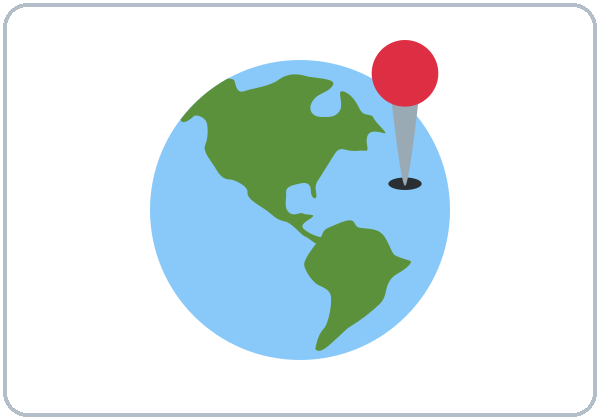
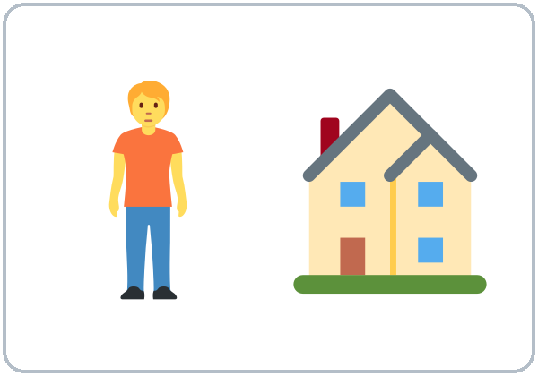
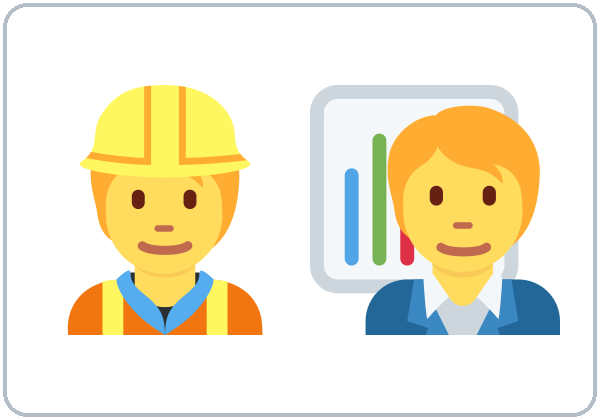
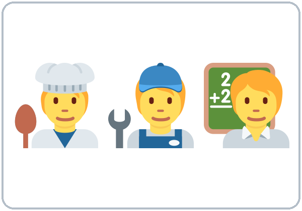
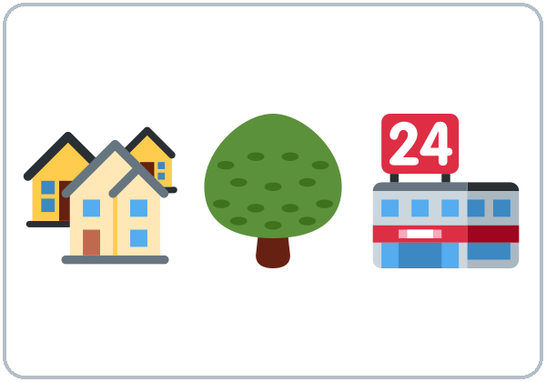
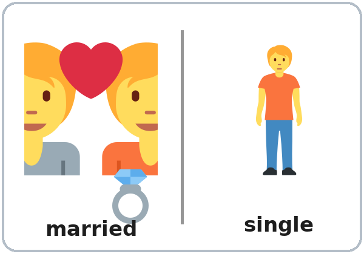
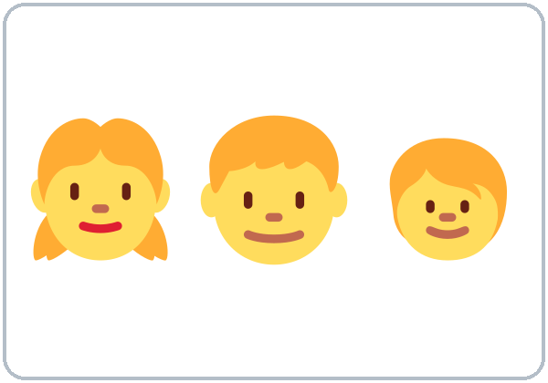
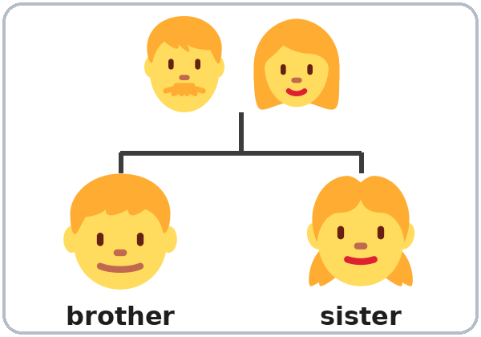
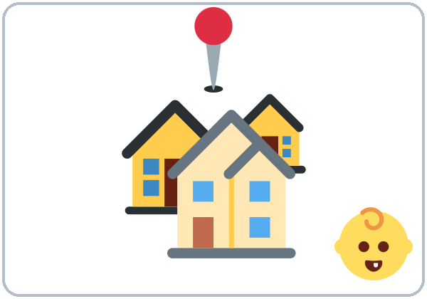
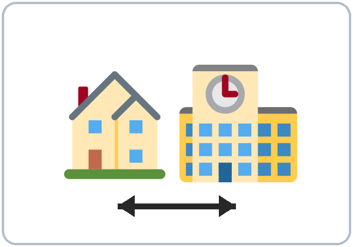
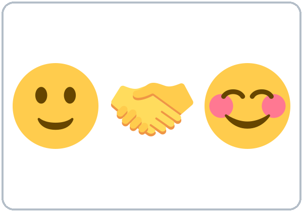
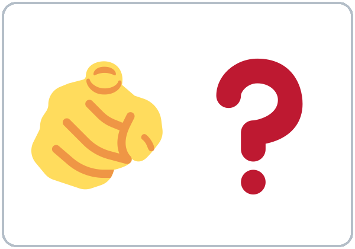
Listening
Listen: the conversation plays twice.
Listen to Rosa and Sam.
A. Listen. Check ✓ True or False.
| True | False | |
|---|---|---|
| 1. Sam is new. | ☐ | ☐ |
| 2. Sam is from Colombia. | ☐ | ☐ |
| 3. Rosa lives on Pine Street. | ☐ | ☐ |
| 4. Sam works at a bakery. | ☐ | ☐ |
| 5. Rosa has two daughters. | ☐ | ☐ |
B. Listen again. Circle the answer.
- Sam is a cook / driver / teacher.
- Rosa starts work at 5:00 / 7:00 / 9:00.
- Sam lives with his wife / brother / sister.
C. Listen again. Write are or do.
- Where ______ you from?
- Where ______ you live?
- ______ you work near here?
- ______ you married?
Grammar
Grammar Box 1: Questions with be (am / is / are)
Choose one word from each column. Read across.
| Are | you | from Mexico? / married? / new here? |
| Is | he / she | a cook? / from Peru? / married? |
| Yes, | I | am. |
| No, | I'm | not. |
| Yes, | he / she | is. |
| No, | he / she | isn't. |
Grammar Box 2: Questions with do / does
| Do | you | live here? / work near here? / have kids? |
| Does | he / she | live here? / work at night? / have kids? |
| Yes, | I | do. |
| No, | I | don't. |
| Yes, | he / she | does. |
| No, | he / she | doesn't. |
Grammar Box 3: Wh- questions
| Where | are | you | from? |
| Where | do | you | live? |
| Where | do | you | work? |
| What | do | you | do? |
| I'm | from | Honduras. / Colombia. / Mexico. |
| I | live | on Pine Street. / near the park. |
| I | work | at a hotel. / at a bakery. |
| I'm | a | cook. / driver. / teacher. |
Questions and answers
Q: How do I make a question in English?
A: Put a helper word at the front: am / is / are or do / does.
Q: When do I use am / is / are?
A: With where you're from, age, job title, feelings, married/single, and places. Look at Box 1.
Q: When do I use do / does?
A: With action verbs like live, work, have, like, speak. Look at Box 2.
Q: What order do the words go in?
A: Question word → helper → person → the rest. Look at Box 3.
Q: How do I give a short answer?
A: Use the same helper as the question. Are you…? → Yes, I am. Do you…? → Yes, I do.
Q: Can I use do and are together?
A: No, never. ✗ Do you are married? ✓ Are you married?
Q: How do I say my age?
A: With be: I'm 35. (not I have 35 years)
Common mistakes
| ✗ Don't say | ✓ Say |
|---|---|
| Where you are from? | Where are you from? |
| Where you live? | Where do you live? |
| Do you are married? | Are you married? |
| I have 35 years. | I'm 35. |
| Is from Peru. | She's from Peru. |
| Yes, I live. | Yes, I do. |
Homework
Homework (10 minutes). Bring it next week!
- Write 5 questions for a friend, family member, or coworker: 3 with do/does and 2 with am/is/are.
- Write their answers (in English!).
- Bonus: Ask one person your questions in English.
My homework
Teacher
At a glance
Objectives: learners can…
- ask and answer 8 or more personal-information questions
- choose between be and do questions
- introduce a partner using he/she
Materials
- name tags
- markers
- "How Our Class Works" sheet
- Student Page 1
- question-card envelopes (one per pair)
- "Find Someone Who" sheet
- baseline checklist
- phone + small speaker
L1_listening.mp3- Prep time: 30 min.
Key vocabulary (with pictures in the Student Workbook)
from, live, work, job, neighborhood, married / single, kids, brother / sister, hometown, near, nice to meet you, What about you?
Clock-time plan
Core = 6:00–6:45 and 7:00–7:15. Everything after 7:15 is optional ("If time").
| Time | Step | Min | Grouping (15 / 7–8) | If running behind |
|---|---|---|---|---|
| 6:00–6:10 | Welcome + Name Chain (the Week 1 opening) | 10 | Two circles / one circle | Go around once only |
| 6:10–6:15 | Orientation: "How Our Class Works" | 5 | Whole class | Hand out the sheet; read the 3 key rules only |
| 6:15–6:23 | New Words (picture page) | 8 | Pairs | Teach the ★ words only |
| 6:23–6:33 | Listening (audio) + "Say it" | 10 | Individuals, then pairs check | Skip the third play; do Task C as a whole class |
| 6:33–6:45 | Grammar Q&A: be or do? + quick pair check | 12 | Whole class, then pairs | Skip the pair check; it becomes homework item 1 |
| 6:45–7:00 | BREAK | 15 | ||
| 7:00–7:10 | Talk Time: Find Someone Who + baseline snapshot | 10 | Talk to 6+ people / everyone | Learners talk to 4 people |
| 7:10–7:15 | Exit Ticket + Homework | 5 | Never skip | |
| 7:15–7:30 | If time (in this order): ① Pronunciation ↗/↘ (5) ② Question Scramble (5) ③ Interview and Introduce (10) | 0–15 | Optional |
Step by step
Step 1 · 6:00–6:10 · Welcome + Name Chain · 10 min
- Grouping: two circles (15 learners) / one circle (7–8 learners).
- Model: "I'm Ana. I like coffee."
- Do: each next person repeats the previous person, then adds their own: "She's Ana. She likes coffee. I'm Carlos. I like soccer."
- Late arrivals: join the circle.
- If behind: go around once only.
Step 2 · 6:10–6:15 · Orientation: "How Our Class Works" · 5 min
- Grouping: whole class.
- Cover: class times and the break; homework every week (short!), checked at the start of class.
- Language rule: "English in class. If you're stuck, a classmate can help you for a few seconds. Then back to English." You don't need to understand what classmates say to each other. Just smile and say "Now in English, please."
- Also say: phones are OK for audio and dictionary. "You can tell the truth or make it up."
- If behind: hand out the sheet and read the 3 key rules only.
Step 3 · 6:15–6:23 · New Words · 8 min
- Grouping: pairs.
- Do: open the Student Workbook to the New Words page. Point to each picture, say the word; learners repeat twice.
- Pairs: A points to a picture, B says the word. Then switch.
- Extra example: show the ID card for a fictional person.
- If behind: teach only the ★ words.
Step 4 · 6:23–6:33 · Listening + "Say it" · 10 min
- Grouping: individuals, then pairs check.
- Before you listen (1 min): "Rosa and Sam meet. What questions do they ask?" Write 2–3 guesses.
- Listen 1 → Task A (true/false). Listen 2 → Task B (circle). Listen 3 → Task C (write are / do).
- Pairs compare after each task.
- "Say it" (1–2 min): pause after "Where are you from?" and "Where do you live?" The class repeats each line twice.
- Bridge to grammar: "When do we use are? When do we use do?"
- If behind: skip the third play; do Task C together (teacher reads the 4 lines).
Step 5 · 6:33–6:45 · Grammar: be or do? · 12 min
- Grouping: whole class, then pairs.
- Show: the Grammar Box (question side / answer side).
- Say: "English questions need a helper word at the front. With am/is/are, move it to the front. With no be, borrow do or does."
- Q&A: a learner reads a Q; the class guesses; read the A; write one example on the board.
- Check questions: "___ you like rice?" (do) • "___ you tired?" (are) • "Where ___ she work?" (does)
- Pair check (last 3–4 min): A builds a question from the box; B answers from the answer side.
- If behind: skip the pair check.
Break · 6:45–7:00 · 15 min
- Set up the "Find Someone Who" sheets during the break.
Step 6 · 7:00–7:10 · Talk Time: Find Someone Who · 10 min
- Grouping: mingle (talk to 6+ people / everyone).
- Do: learners turn each prompt into a correct question (Do you live near here? / Are you a morning person?).
- When someone says yes: write their name and ask one follow-up question. One name per row.
- Baseline snapshot: the teacher (or a second volunteer) uses the checklist: Can they ask a do question? Answer in a full sentence? Give 1 extra detail?
- Later: formal 2-minute baseline interviews in Weeks 2–3 (about 5 learners per week).
- If behind: learners talk to 4 people.
Step 7 · 7:10–7:15 · Exit Ticket + Homework · 5 min · NEVER SKIP
- Exit ticket: write one be question and one do question.
- Homework: explain it from the workbook and do item 1 together.
If time · 7:15–7:30 · pick in this order
- ① Pronunciation (5 min): Yes/No questions go up ↗; Wh- questions go down ↘. Hum the melody, then say the words. Pairs: A says a question, B draws the arrow in the air.
- ② Question Scramble (5 min): each pair builds 4 questions from an envelope of word cards.
- ③ Interview and Introduce (10 min): partners interview each other, then introduce the partner to a group: "This is Marta. She's from Guatemala." (Previews Lesson 2's -s. Don't teach it yet.)
Listening script: L1_listening.mp3 (about 1:40, plays twice)
Audio: play from a phone + small speaker. No speaker? Read the script with a volunteer learner.
Narrator: Lesson one. Listening. Rosa and Sam meet at the community center. Listen.
Rosa: Hi! Are you new here?
Sam: Yes, I am. I'm Sam. Nice to meet you.
Rosa: Nice to meet you too. I'm Rosa. Where are you from, Sam?
Sam: I'm from Honduras. And you?
Rosa: I'm from Colombia. Where do you live?
Sam: I live on Pine Street, near the park.
Rosa: Oh, me too! Do you work near here?
Sam: Yes, I do. I work at a hotel. I'm a cook. What do you do?
Rosa: I work at a bakery. I start very early, at five in the morning!
Sam: Wow. Do you have kids?
Rosa: Yes, I do. I have two daughters. Are you married?
Sam: No, I'm not. But my brother lives here with me.
Rosa: That's nice. Well, see you in class!
Sam: See you!
Answer key
- Task A: 1 T, 2 F (Honduras), 3 T, 4 F (a hotel), 5 T.
- Task B: 1 a cook, 2 5:00, 3 brother.
- Task C: 1 are, 2 do, 3 Do, 4 Are.
Teacher notes
- Privacy: never ask about immigration status, money, or exact addresses. Married/single is optional; Do you have family here? is an alternative.
- Mixed levels: stronger learners add a follow-up question to every answer; newer learners use the question cards as a script.
- Typical mistakes from Spanish speakers: I have 35 years (Spanish uses "have" for age) and Where you live? (Spanish questions need no helper word). These are the two most common errors this week. Write the correct form on the board, and point learners to the Spanish note on their Grammar page. They can read it themselves; you don't need to explain it.